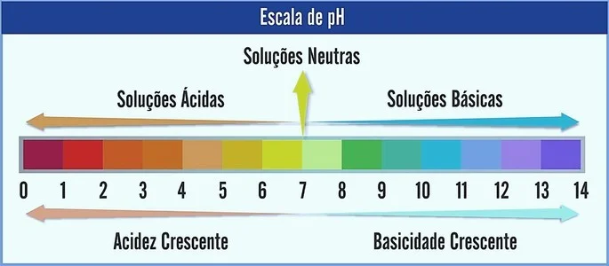
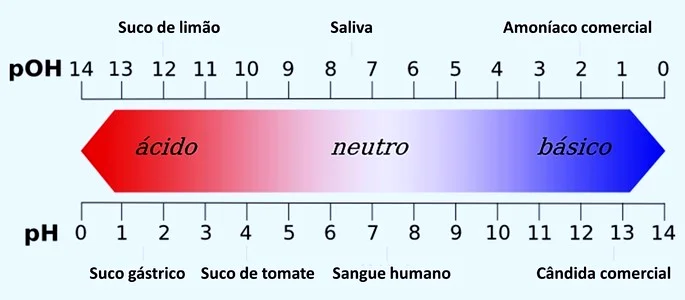

O pH corresponde ao potencial hidrogeniônico de uma solução. Ele é determinado pela concentração de íons de hidrogênio (H+) e serve para medir o grau de acidez, neutralidade ou alcalinidade de determinada solução.
Além do pH existe também outra grandeza que determina a acidez e a basicidade de um sistema aquoso: o pOH (potencial hidroxiliônico). Essa escala possui a mesma função que o pH, embora seja menos utilizada. Escala de pH  O pH é representado numa escala que varia de 0 a 14. Ela mede a acidez e basicidade de uma solução. Sendo assim, o pH 7 representa uma solução neutra (por exemplo, a água pura). Já os que estão antes dele são consideradas soluções ácidas (pH ácido), e os que estão após o 7 são as soluções básicas (pH alcalino). Feita essa observação, o caráter ácido é crescente da direita para a esquerda. Já o caráter básico, da esquerda para a direita. Note que, quanto menor o valor do pH mais ácida será a solução. Exemplos
Soluções Ácidas| Solução | pH |
|---|---|
| Suco gástrico | 2,0 |
| Suco de limão | 2,2 |
| Vinagre | 3,0 |
| Café | 5,0 |
| Leite de vaca | 6,4 |
Soluções Básicas
| Solução | pH |
|---|---|
| Sangue humano | 7,35 |
| Água do mar | 7,4 |
| Bicarbonato de sódio | 8,4 |
| Leite de magnésia | 10,5 |
| Alvejante | 12,5 |
Como calcular o pH?
Em 1909, o químico dinamarquês Soren Sörensen (1868-1939) propôs que a acidez das soluções, medida em termos das concentrações de íons H+, tivesse seus valores transformados utilizando logaritmos para facilitar a compreensão.
![negrito pH negrito espaço negrito igual a negrito espaço negrito menos negrito espaço negrito log negrito espaço negrito parêntese recto esquerdo negrito H à potência de negrito mais negrito parêntese recto direito]()
Na temperatura de 25 ºC o produto iônico da água é igual a 10–14 mol2/L2.
![parêntese recto esquerdo reto H à potência de mais parêntese recto direito espaço. espaço parêntese recto esquerdo OH à potência de menos parêntese recto direito espaço igual a espaço 10 à potência de menos 14 fim do exponencial]()
Aplicando o cologaritmo na expressão, temos que:
![tabela linha com célula com menos espaço log espaço parêntese recto esquerdo reto H à potência de mais parêntese recto direito espaço fim da célula blank célula com menos espaço log espaço parêntese recto esquerdo OH à potência de menos parêntese recto direito fim da célula igual a célula com menos espaço log espaço 10 à potência de menos 14 fim do exponencial fim da célula linha com negrito pH negrito mais célula com negrito espaço negrito espaço negrito pOH fim da célula negrito igual a negrito 14 fim da tabela]()
Através dessa expressão, podemos obter o valor corresponde de uma escala em outra através da subtração.
![tabela linha com negrito pH igual a 14 menos pOH linha com negrito pOH igual a 14 menos pH fim da tabela]()